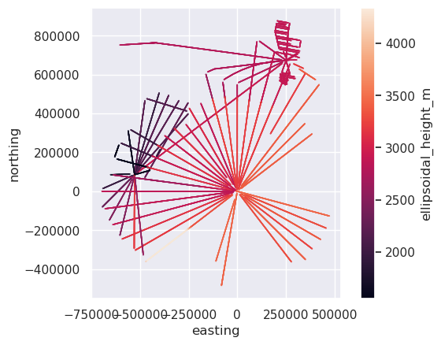
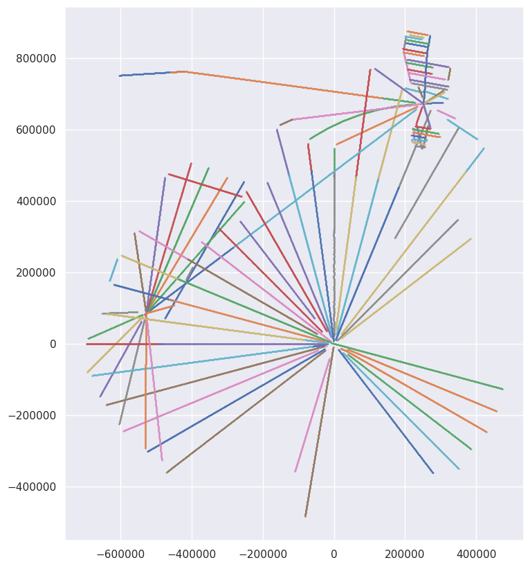
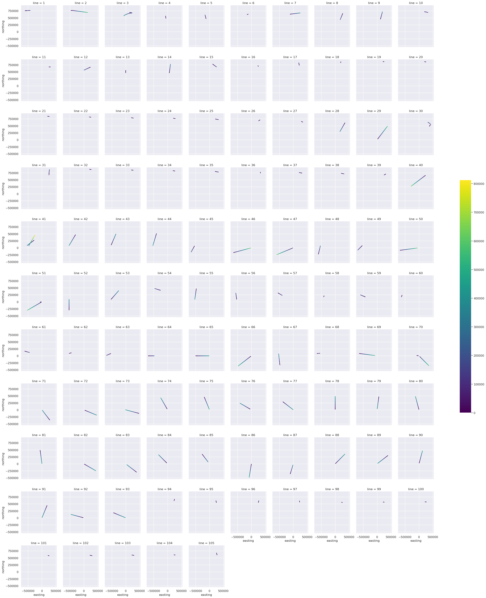
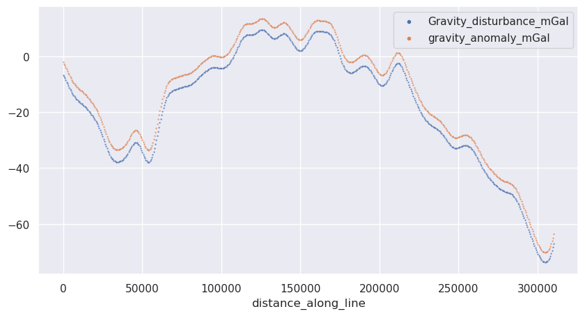
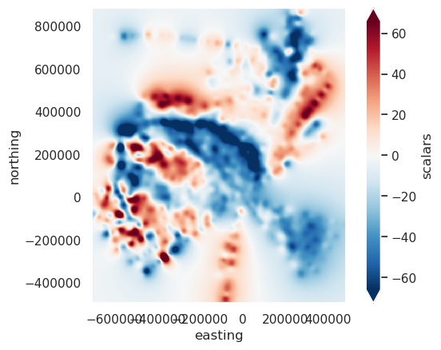
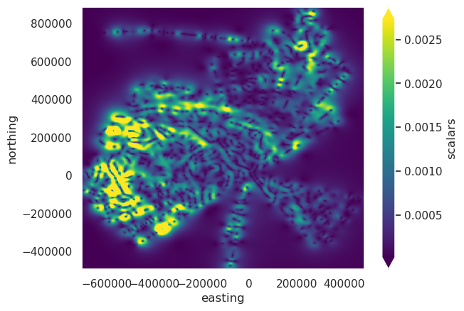

Downloading the PolarGAP airborne gravity survey to use in the notebooks#
Accessed from: https://ramadda.data.bas.ac.uk/repository/entry/show?entryid=32ac27a1-abe0-4f33-ba30-65a093511fb8 Survey can be viewed here: https://bas.maps.arcgis.com/apps/instant/media/index.html?appid=c1a658ec78d54be18da570e955c278ca# Some more info here: https://antarctica.github.io/PDC_GeophysicsBook/data-portal/data_available.html#polargap-2015-16 Metadata here: https://data.bas.ac.uk/full-record.php?id=GB/NERC/BAS/PDC/01583
Processing notes:
The ESA PolarGap airborne gravity, lidar/radar and aeromagnetic survey was carried out in Antarctica in the field season 2015/16. The purpose of the 2015/16 ESA PolarGAP airborne survey of the South Pole region was to fill the gap in satellite gravity coverage, enabling construction of accurate global geoid models. Additional radar flights over the Recovery Lakes for the Norwegian Polar Institute (NPI) were carried out as part of the same survey, but included collection of airborne gravity. Gravity data were collected using two complimentary systems. The primary system was a ZLS-modified Lacoste and Romberg (LCR) gravimeter (S-83) which gives exceptionally low and predictable long term drift. The secondary system was high specification inertial navigation system (iMAR RQH-1003), provided by TU Darmstadt, capable of resolving gravity anomalies even under turbulent conditions, but more prone to instrument drift. Results from both systems were merged to give a unified best product. The aircraft used was the BAS aerogeophysicaly equipped twin otter VP-FBL. Data are available as an ASCII table (.csv).
Data resolution: The radial design of the survey makes defining a specific resolution problematic. Line spacing at the survey edges was 90 km, reducing towards South Pole. The along track resolution is 6 km half-width based on the imposed filtering.
The aerogravity data set includes the following channels:
Fiducial: line_no*10000+running no
latitude_decimal_degrees: DD.DDDDD
longitude_decimal_degrees: DDD.DDDDD
ellipsoidal_height_m: Elevation referenced to WGS1984 ellipsoid (m)
gravity_disturbance_mGal: Gravity variations corrected to the WGS1984 ellipsoid (mGal)
gravity_anomaly_mGal: Free air gravity anomalies corrected to the GOCE R5 geoid (mGal)
[1]:
%load_ext autoreload
%autoreload 2
import harmonica as hm
import matplotlib.pyplot as plt
import numpy as np
import pandas as pd
import plotly.io as pio
import pooch
import seaborn as sns
import verde as vd
import airbornegeo
pio.renderers.default = "notebook"
Load data#
[3]:
path = pooch.retrieve(
url="https://ramadda.data.bas.ac.uk/repository/entry/get/PolarGAP_gravity_release.csv?entryid=synth:32ac27a1-abe0-4f33-ba30-65a093511fb8:L1BvbGFyR0FQX2dyYXZpdHlfcmVsZWFzZS5jc3Y=",
fname="PolarGAP_gravity_release.csv",
path=f"{pooch.os_cache('airbornegeo')}",
known_hash="23b574ddee4aec32a4f2b4318a94a3f4c1592edba20d6c2e2167f28242c65306",
progressbar=True,
)
[ ]:
data_df = pd.read_csv(path, na_values=["*"])
# fiducial is line_no * 10000 + running no
data_df["line_no"] = data_df.Fiducial / 10e3
data_df["line_no"] = data_df["line_no"].astype(int)
# change line id to start sequentially from 1
data_df["line"] = airbornegeo.unique_line_id(data_df, "line_no")
data_df
[63]:
data_df.describe()
[63]:
| Fiducial | latitude_decimal_degrees | longitude_decimal_degrees | ellipsoidal_height_m | Gravity_disturbance_mGal | gravity_anomaly_mGal | line_no | line | |
|---|---|---|---|---|---|---|---|---|
| count | 4.559700e+04 | 45597.000000 | 45597.000000 | 45597.000000 | 45597.000000 | 45597.000000 | 45597.000000 | 45597.000000 |
| mean | 6.375335e+05 | -86.048929 | -24.510446 | 2911.716774 | -22.152389 | -15.230927 | 63.428690 | 56.903809 |
| std | 2.873984e+05 | 2.006619 | 70.888902 | 451.709167 | 36.383963 | 36.124052 | 28.714862 | 26.519137 |
| min | 4.001000e+04 | -89.997400 | -170.573450 | 1551.690000 | -162.400000 | -154.186000 | 4.000000 | 1.000000 |
| 25% | 4.534200e+05 | -87.691220 | -79.150910 | 2801.440000 | -47.500000 | -40.066000 | 45.000000 | 41.000000 |
| 50% | 6.812700e+05 | -85.841530 | -30.002950 | 2923.410000 | -28.000000 | -20.757000 | 68.000000 | 61.000000 |
| 75% | 8.722100e+05 | -84.594100 | 18.310790 | 3207.800000 | 3.400000 | 9.345000 | 87.000000 | 79.000000 |
| max | 1.221260e+06 | -81.144880 | 142.642960 | 4342.640000 | 175.800000 | 185.508000 | 122.000000 | 105.000000 |
Reproject#
[64]:
# reproject to EPSG:3031 Polar Stereographic
data_df["easting"], data_df["northing"] = airbornegeo.reproject(
data_df.longitude_decimal_degrees,
data_df.latitude_decimal_degrees,
input_crs="EPSG:4326",
output_crs="EPSG:3031",
)
data_df.head()
[64]:
| Fiducial | latitude_decimal_degrees | longitude_decimal_degrees | ellipsoidal_height_m | Gravity_disturbance_mGal | gravity_anomaly_mGal | line_no | line | easting | northing | |
|---|---|---|---|---|---|---|---|---|---|---|
| 0 | 40010 | -81.14488 | -38.74183 | 2784.87 | -9.2 | -3.575 | 4 | 1 | -603265.926411 | 751873.371495 |
| 1 | 40020 | -81.14804 | -38.71200 | 2784.86 | -9.3 | -3.676 | 4 | 1 | -602658.432454 | 751917.898625 |
| 2 | 40030 | -81.15137 | -38.68235 | 2784.85 | -9.3 | -3.677 | 4 | 1 | -602041.808259 | 751945.605104 |
| 3 | 40040 | -81.15456 | -38.65225 | 2784.85 | -9.4 | -3.778 | 4 | 1 | -601428.967250 | 751989.547131 |
| 4 | 40050 | -81.15767 | -38.62209 | 2784.85 | -9.4 | -3.779 | 4 | 1 | -600820.916289 | 752040.513153 |
[65]:
data_df.plot.scatter(
"easting",
"northing",
c="ellipsoidal_height_m",
s=0.02,
).set_aspect("equal")

[66]:
fig, ax = plt.subplots(figsize=(10, 10))
for _line_num, line_data in data_df.groupby("line"):
# plot points
ax.scatter(
line_data.easting,
line_data.northing,
s=0.1,
)
ax.set_aspect("equal")

[ ]:
survey = airbornegeo.Survey(
data_df,
line_column="line",
distance_column="distance_along_line",
)
survey.along_track_distance()
data_df = survey.data
data_df.head()
[ ]:
survey.plot(color_by="distance_along_line", s=0.02)
[70]:
# plot each line
df = data_df
grid = sns.FacetGrid(
df,
col="line",
col_wrap=int(len(df.line.unique()) ** 0.5),
)
norm = plt.Normalize(
vmin=df.distance_along_line.min(), vmax=df.distance_along_line.max()
)
grid.map_dataframe(
sns.scatterplot,
"easting",
"northing",
"distance_along_line",
palette="viridis",
hue_norm=norm,
edgecolor="none",
s=2,
)
sm = plt.cm.ScalarMappable(cmap="viridis", norm=norm)
sm.set_array([])
cbar = grid.figure.colorbar(sm, ax=grid.axes.ravel().tolist(), shrink=0.4)

Examine gravity data#
[71]:
data_df.columns
[71]:
Index(['Fiducial', 'latitude_decimal_degrees', 'longitude_decimal_degrees',
'ellipsoidal_height_m', 'Gravity_disturbance_mGal',
'gravity_anomaly_mGal', 'line_no', 'line', 'easting', 'northing',
'geometry', 'distance_along_line'],
dtype='str')
[72]:
data_df[["Gravity_disturbance_mGal", "gravity_anomaly_mGal"]].head()
[72]:
| Gravity_disturbance_mGal | gravity_anomaly_mGal | |
|---|---|---|
| 0 | -9.2 | -3.575 |
| 1 | -9.3 | -3.676 |
| 2 | -9.3 | -3.677 |
| 3 | -9.4 | -3.778 |
| 4 | -9.4 | -3.779 |
[73]:
data_df[["Gravity_disturbance_mGal", "gravity_anomaly_mGal"]].describe()
[73]:
| Gravity_disturbance_mGal | gravity_anomaly_mGal | |
|---|---|---|
| count | 45597.000000 | 45597.000000 |
| mean | -22.152389 | -15.230927 |
| std | 36.383963 | 36.124052 |
| min | -162.400000 | -154.186000 |
| 25% | -47.500000 | -40.066000 |
| 50% | -28.000000 | -20.757000 |
| 75% | 3.400000 | 9.345000 |
| max | 175.800000 | 185.508000 |
[ ]:
survey.plot(color_by="Gravity_disturbance_mGal", s=0.02)
[ ]:
survey.plot(color_by="gravity_anomaly_mGal", s=0.02)
[77]:
fig = airbornegeo.plot_profiles(
data_df[data_df.line == 14],
y=("Gravity_disturbance_mGal", "gravity_anomaly_mGal"),
x="distance_along_line",
)

[78]:
data_df.to_csv("../data/PolarGAP_gravity_survey.csv", index=False)
[93]:
data_df = pd.read_csv("../data/PolarGAP_gravity_survey.csv")
data_df
[93]:
| Fiducial | latitude_decimal_degrees | longitude_decimal_degrees | ellipsoidal_height_m | Gravity_disturbance_mGal | gravity_anomaly_mGal | line_no | line | easting | northing | geometry | distance_along_line | |
|---|---|---|---|---|---|---|---|---|---|---|---|---|
| 0 | 40010 | -81.14488 | -38.74183 | 2784.87 | -9.2 | -3.575 | 4 | 1 | -603265.926411 | 751873.371495 | POINT (-603265.9264107548 751873.3714952277) | 0.000000 |
| 1 | 40020 | -81.14804 | -38.71200 | 2784.86 | -9.3 | -3.676 | 4 | 1 | -602658.432454 | 751917.898625 | POINT (-602658.4324541363 751917.8986249841) | 609.123610 |
| 2 | 40030 | -81.15137 | -38.68235 | 2784.85 | -9.3 | -3.677 | 4 | 1 | -602041.808259 | 751945.605104 | POINT (-602041.8082592422 751945.6051041025) | 1226.369952 |
| 3 | 40040 | -81.15456 | -38.65225 | 2784.85 | -9.4 | -3.778 | 4 | 1 | -601428.967250 | 751989.547131 | POINT (-601428.9672503384 751989.5471308591) | 1840.784311 |
| 4 | 40050 | -81.15767 | -38.62209 | 2784.85 | -9.4 | -3.779 | 4 | 1 | -600820.916289 | 752040.513153 | POINT (-600820.9162888281 752040.5131525936) | 2450.967486 |
| ... | ... | ... | ... | ... | ... | ... | ... | ... | ... | ... | ... | ... |
| 45592 | 1221220 | -83.40000 | 20.42698 | 2899.63 | -70.4 | -67.202 | 122 | 105 | 250545.546783 | 672726.897042 | POINT (250545.5467832175 672726.8970418533) | 69339.545404 |
| 45593 | 1221230 | -83.39572 | 20.40074 | 2898.87 | -69.9 | -66.701 | 122 | 105 | 250400.049295 | 673278.825916 | POINT (250400.04929548543 673278.8259160124) | 69910.329953 |
| 45594 | 1221240 | -83.39148 | 20.37734 | 2898.32 | -69.2 | -66.001 | 122 | 105 | 250285.980997 | 673814.271927 | POINT (250285.98099719553 673814.2719269376) | 70457.791374 |
| 45595 | 1221250 | -83.38725 | 20.35629 | 2898.00 | -68.6 | -65.401 | 122 | 105 | 250198.796976 | 674338.455428 | POINT (250198.79697590342 674338.4554279465) | 70989.175789 |
| 45596 | 1221260 | -83.38305 | 20.33728 | 2897.92 | -67.8 | -64.601 | 122 | 105 | 250134.153862 | 674850.695777 | POINT (250134.15386176508 674850.6957770785) | 71505.478905 |
45597 rows × 12 columns
[ ]:
# block reduce the line data (data_df was reloaded from CSV above, so
# rebuild the Survey from it rather than reusing the earlier one)
survey = airbornegeo.Survey(
data_df, line_column="line", distance_column="distance_along_line"
)
survey = survey.block_reduce(
np.median,
spacing=2e3,
# reduce_by=('easting','northing'),
reduce_by="distance_along_line",
)
data_df = survey.data
data_df
[95]:
data_df.to_csv("../data/PolarGAP_gravity_survey_blocked.csv", index=False)
[45]:
break # noqa: F701
Cell In[45], line 1
break # noqa: F701
^
SyntaxError: 'break' outside loop
[96]:
data_df = pd.read_csv("../data/PolarGAP_gravity_survey_blocked.csv")
data_df
[96]:
| distance_along_line | tmp | Fiducial | latitude_decimal_degrees | longitude_decimal_degrees | ellipsoidal_height_m | Gravity_disturbance_mGal | gravity_anomaly_mGal | line_no | line | easting | northing | |
|---|---|---|---|---|---|---|---|---|---|---|---|---|
| 0 | 917.746781 | 0.0 | 40025.0 | -81.149705 | -38.697175 | 2784.855 | -9.3 | -3.6765 | 4.0 | 1 | -602350.120357 | 751931.751865 |
| 1 | 3062.544403 | 0.0 | 40060.0 | -81.160890 | -38.592310 | 2784.860 | -9.5 | -3.8800 | 4.0 | 1 | -600210.469324 | 752077.672651 |
| 2 | 4894.960238 | 0.0 | 40090.0 | -81.170560 | -38.503120 | 2784.980 | -9.8 | -4.1830 | 4.0 | 1 | -598381.166423 | 752184.148885 |
| 3 | 7021.612558 | 0.0 | 40125.0 | -81.181600 | -38.398660 | 2785.130 | -11.2 | -5.5865 | 4.0 | 1 | -596259.512926 | 752328.349461 |
| 4 | 9143.716281 | 0.0 | 40160.0 | -81.192660 | -38.294490 | 2784.960 | -14.0 | -8.3900 | 4.0 | 1 | -594141.757244 | 752462.714587 |
| ... | ... | ... | ... | ... | ... | ... | ... | ... | ... | ... | ... | ... |
| 14118 | 62575.308980 | 0.0 | 1221100.0 | -83.449290 | 20.756100 | 2908.640 | -73.4 | -70.2160 | 122.0 | 105 | 252501.746958 | 666252.862380 |
| 14119 | 64539.161722 | 0.0 | 1221135.0 | -83.434875 | 20.661460 | 2907.920 | -72.7 | -69.5125 | 122.0 | 105 | 251955.219831 | 668139.134848 |
| 14120 | 66516.392894 | 0.0 | 1221170.0 | -83.420670 | 20.562920 | 2905.010 | -72.1 | -68.9080 | 122.0 | 105 | 251349.621996 | 670021.115311 |
| 14121 | 68486.712981 | 0.0 | 1221205.0 | -83.406335 | 20.466950 | 2901.090 | -71.1 | -67.9035 | 122.0 | 105 | 250773.281353 | 671905.033246 |
| 14122 | 70723.483581 | 0.0 | 1221245.0 | -83.389365 | 20.366815 | 2898.160 | -68.9 | -65.7010 | 122.0 | 105 | 250242.388987 | 674076.363677 |
14123 rows × 12 columns
[97]:
data_df = data_df.dropna(
subset=["easting", "northing", "ellipsoidal_height_m", "gravity_anomaly_mGal"]
)
coords = (
data_df.easting,
data_df.northing,
data_df.ellipsoidal_height_m,
)
data_df
[97]:
| distance_along_line | tmp | Fiducial | latitude_decimal_degrees | longitude_decimal_degrees | ellipsoidal_height_m | Gravity_disturbance_mGal | gravity_anomaly_mGal | line_no | line | easting | northing | |
|---|---|---|---|---|---|---|---|---|---|---|---|---|
| 0 | 917.746781 | 0.0 | 40025.0 | -81.149705 | -38.697175 | 2784.855 | -9.3 | -3.6765 | 4.0 | 1 | -602350.120357 | 751931.751865 |
| 1 | 3062.544403 | 0.0 | 40060.0 | -81.160890 | -38.592310 | 2784.860 | -9.5 | -3.8800 | 4.0 | 1 | -600210.469324 | 752077.672651 |
| 2 | 4894.960238 | 0.0 | 40090.0 | -81.170560 | -38.503120 | 2784.980 | -9.8 | -4.1830 | 4.0 | 1 | -598381.166423 | 752184.148885 |
| 3 | 7021.612558 | 0.0 | 40125.0 | -81.181600 | -38.398660 | 2785.130 | -11.2 | -5.5865 | 4.0 | 1 | -596259.512926 | 752328.349461 |
| 4 | 9143.716281 | 0.0 | 40160.0 | -81.192660 | -38.294490 | 2784.960 | -14.0 | -8.3900 | 4.0 | 1 | -594141.757244 | 752462.714587 |
| ... | ... | ... | ... | ... | ... | ... | ... | ... | ... | ... | ... | ... |
| 14118 | 62575.308980 | 0.0 | 1221100.0 | -83.449290 | 20.756100 | 2908.640 | -73.4 | -70.2160 | 122.0 | 105 | 252501.746958 | 666252.862380 |
| 14119 | 64539.161722 | 0.0 | 1221135.0 | -83.434875 | 20.661460 | 2907.920 | -72.7 | -69.5125 | 122.0 | 105 | 251955.219831 | 668139.134848 |
| 14120 | 66516.392894 | 0.0 | 1221170.0 | -83.420670 | 20.562920 | 2905.010 | -72.1 | -68.9080 | 122.0 | 105 | 251349.621996 | 670021.115311 |
| 14121 | 68486.712981 | 0.0 | 1221205.0 | -83.406335 | 20.466950 | 2901.090 | -71.1 | -67.9035 | 122.0 | 105 | 250773.281353 | 671905.033246 |
| 14122 | 70723.483581 | 0.0 | 1221245.0 | -83.389365 | 20.366815 | 2898.160 | -68.9 | -65.7010 | 122.0 | 105 | 250242.388987 | 674076.363677 |
14123 rows × 12 columns
[102]:
eqs_kwargs = dict( # noqa: C408
damping=100,
depth="default",
block_size=5000,
)
# eqs_unlevelled = hm.EquivalentSourcesGB(
# window_size=600e3,
# random_state=42,
# **eqs_kwargs,
# )
eqs_unlevelled = hm.EquivalentSources(**eqs_kwargs)
# bytes = eqs_unlevelled.estimate_required_memory(coords)
# print(f"{bytes / 1e9} GB ram required")
[103]:
eqs_unlevelled.fit(coords, data_df.gravity_anomaly_mGal)
[103]:
EquivalentSources(block_size=5000, damping=100)In a Jupyter environment, please rerun this cell to show the HTML representation or trust the notebook.
On GitHub, the HTML representation is unable to render, please try loading this page with nbviewer.org.
Parameters
| damping | 100 | |
| points | None | |
| depth | 'default' | |
| block_size | 5000 | |
| parallel | True | |
| dtype | 'float64' |
[104]:
# Define grid coordinates
grid_coords = vd.grid_coordinates(
region=vd.pad_region(vd.get_region(coords), 10e3),
spacing=2000,
extra_coords=data_df.ellipsoidal_height_m.mean(), # upward continue
adjust="region",
)
grid_unlevelled = eqs_unlevelled.grid(grid_coords)
# grid_unlevelled = vd.distance_mask(
# (coords[0], coords[1]), maxdist=10e3, grid=grid_unlevelled
# )
grid_unlevelled = grid_unlevelled.reset_coords(names="upward").scalars
grid_unlevelled.plot(robust=True).axes.set_aspect("equal")

[105]:
hg_unlevelled = airbornegeo.filter_grid(
grid_unlevelled, filter_type="horizontal_gradient"
)
hg_unlevelled.plot(robust=True)
[105]:
<matplotlib.collections.QuadMesh at 0x7f855a775950>

[ ]: